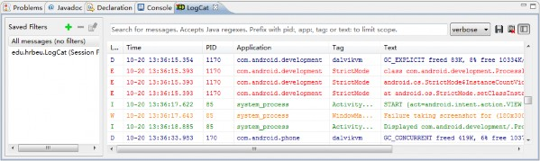
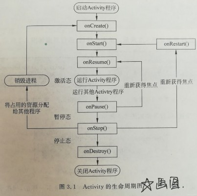
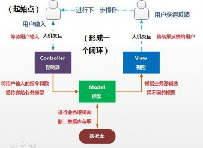
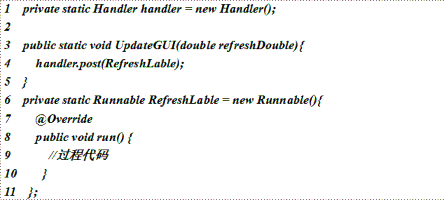
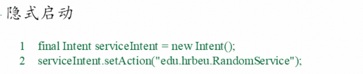
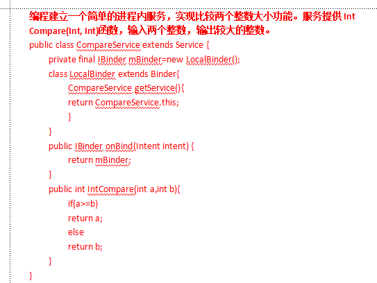

IOS 和 Android 比较
开发平台：
iOS：开发平台为 Apple Mac OS。 Android：开发平台不局限于操作系统。
开发工具：
iOS：开发工具为 Xcode。 Android：开发工具包括 Eclipse、AS
开发语言：
iOS：主要使用 Objective-C 和 Swift 两种开发语言。
Android：主要使用 Java 开发语言。
兼容性：
iOS：采用封闭的操作系统，由 Apple 制定，因此具有较高的兼容性。
Android：由 Google 规定出硬件标准，由不同的厂商进行手机的研发，由于厂商众多，所以兼容性较低。
UI 交互：
iOS：主要依靠触屏完成用户界面交互。 Android：用户界面交互需要同时使用触屏和按键。
显示风格：
iOS：具有统一的视觉规范和分辨率。
Android：视觉规范由各个厂商决定，因此屏幕分辨率较为繁多。
Android 体系结构
Android 操作系统中，将体系结构划分为 4 层：应用层、应用框架层、系统运行库层以及 Linux内核层。
应用层：这是 Android 系统最顶层的层级，包括了用户可见的各种应用程序。这些应用程序可以是系统内置的应用（如联系人、短信、浏览器等），也可以是第三方应用程序。
应用框架层：这一层提供了开发 Android 应用程序所需的各种框架和 API。它包括一系列的管理服务、资源管理、界面构建和数据存储等功能，为应用程序开发者提供了丰富的开发工具和接口。
系统运行库层：系统运行库层是位于应用框架层和 Linux 内核层之间的一个抽象层。它包括了一系列的库模块，提供了访问 Android 系统功能的接口和工具，如图形渲染、数据库访问、媒
体处理等。
Linux 内核层：Android 基于 Linux 内核构建，该层提供了底层硬件驱动程序和系统资源管理。它负责处理底层的系统任务，如内存管理、进程管理、设备驱动等。
Android SDK 的目录结构和示例程序
JAVA_HOME 是 JDK 的安装目录，根据 JDK 实际安装位置进行修改
ANT_HOME 是 Apache Ant 的安装目录，根据Apache Ant 实际安装位置进行修改；
ANDROID_HOME 是 Android SDK 的安装目录，根据实际安装位置进行修改
CLASSPATH 是需要使用的库文件的位置
Path 是可执行文件的搜索路径，将<Apache Ant>/bin 、<JDK>/bin 和<Android SDK>/tools 三个目录追加到原有的 Path 变量值中，目录之间使用分号分隔
apk 文件是 Android 系统的安装程序，上传到 Android 模拟器或Android 手机后可以进行安装
apk 文件本身是一个 zip 压缩文件，能够使用 WinRAR、UnZip 等软件直接打开，下图是用WinRAR 打开的 HelloCommandline-debug.apk 文件
上传新的 apk 文件
出现错误提示的原因是模拟器中已存在该文件，用户需要在模拟器中先删除原有 apk 文件，再使用 ADB 工具上传新的 apk 文件
删除 apk 文件
删除已经安装在 Android 系统中的 apk 文件可使用 adb uninstall <包名称>的方法，例如删除 HelloCommandline 工程的 apk 文件， 则可在 CMD 中输入命令 adb uninstall edu.hrbeu.HelloCommandline，提示“Success”则表示成功删除
用途：R.java 文件是 ADT 自动生成的文件，包含对 drawable、layout 和 values 目录内的资源的引用指针，Android 程序能够直接通过R 类引用目录中的资源。
生成方法：在工程名称上点击，选择 Refresh 更新R.java 文件中的代码。
R.java 文件是 ADT 自动生成的文件，Android 程序能够直接通过 R 类引用目录中的资源。 AndroidManifest.xml 是 XML 格式的 Android 程序声明文件，包含了 Android 系统运行 Android 程序前所必须掌握的重要信息，每个 Android 程序必须在根目录下包含一个 AndroidManifest.xml 文件
base 模块：在 Android 源代码中，"base"模块是一个核心模块，它包含了 Android 系统的基础功能和服务。该模块提供了许多核心类和库，用于支持 Android 系统的运行和各种应用程序的开发。
base 库：Android 中的"base 库"是指Android Framework 层的基础库，包含了许多常用的功能和工具类。这些库提供了对 Android 系统功能的访问和操作的接口，以及各种工具类用于开发 Android 应用程序。
Base 文件夹结构：在 Android 应用程序的代码中，"base 文件"可能指的是应用程序模块中的"base"文件夹。这个文件夹通常是用来存放应用程序的基础类、基础功能和共享的资源文件。开发者可以根据自己的需求，在"base"文件夹中编写通用的代码和资源，供应用程序其他模块调用和共享。
Android 系统四大组件 （调用的基本模块）
Activity
Android 程序的呈现层，显示可视化的用户界面，并接收与用户交互所产生的界面事件 Android 应用程序可以包含一个或多个 Activity，一般需要指定一个程序启动时显示的 Activity
Service
Service 一般用于没有用户界面，但需要长时间在后台运行的应用可公开 Service 的程序接口，供其他进程调用
BroadcaseReceiver
用来接收广播消息的组件，不包含任何用户界面.可以启动 Activity 或者 Notification 通知用
户接收到重要信息。Notification 能够通过多种方法提示用户，包括闪动背景灯、震动设备、发出声音或在状态栏上放置一个图标
ContentProvider
是 Android 系统提供的一种标准的共享数据的机制，其他程序通过 ContentProvider 访问程序的私有数据 。Android 系统内部提供一些内置的 ContentProvider，能够为应用程序提供重要的数据信息、联系人信息、通话记录。
Android 系统提供了两种调试工具 LogCat 和 DevTools，用于定位、分析及修复程序中出现的错误
LogCat.LogCat 是用来获取系统日志信息的工具，并可以显示在 Eclipse 集成开发环境中.功
能：能够捕获的信息包括 Dalvik 虚拟机产生的信息、进程信息、ActivityManager 信息、 PackagerManager 信息、Homeloader 信息、WindowsManager 信息、Android 运行时信息和应用程序信息等
LogCat 提供了“过滤”功能
在右上角的“+”号和“-”号，分别是添加和删除过滤器。用户可以根据日志信息的标签（Tag）、产生日志的进程编号（Pid）或信息等级（Level），对显示的日志内容进行过滤

在 Android 开发中，有两种常见的用户交互事件：按键事件和触摸事件。这些事件可以通过相应的事件监听器进行捕捉和处理。下面是对这两种事件的简要描述：
按键事件（Key Events）：按键事件是指用户通过物理按键或虚拟键盘输入时触发的事件。 Android 提供了处理按键事件的机制，以便应用程序可以响应用户的按键操作。按键事件通常包括按下、释放、长按等不同的动作。可以通过实现OnKeyListener 接口或重写onKeyDown()
和 onKeyUp()方法来捕捉和处理按键事件。
public class MainActivity extends AppCompatActivity implements View.OnKeyListener { @Override
protected void onCreate(Bundle savedInstanceState) { super.onCreate(savedInstanceState); setContentView(R.layout.activity_main);
// 在适当的视图上设置按键监听器 View view = findViewById(R.id.my_view); view.setOnKeyListener(this); view.setFocusableInTouchMode(true); view.requestFocus();
}
@Override
public boolean onKey(View v, int keyCode, KeyEvent event) {
if (keyCode == KeyEvent.KEYCODE_ENTER && event.getAction() == KeyEvent.ACTION_DOWN) {
// 处理按下回车键的操作
Toast.makeText(this, "Enter key pressed", Toast.LENGTH_SHORT).show(); return true; // 返回 true 表示事件已经被处理，不会再继续传递给其他地方
}
return false; // 返回 false 表示事件未被处理，会继续传递给其他地方处理
}
}
触摸事件（Touch Events）：触摸事件是指用户通过触摸屏幕进行交互时触发的事件。Android提供了处理触摸事件的机制，以便应用程序可以根据用户的触摸操作进行相应的处理。触摸事件通常包括按下、移动、抬起等不同的动作。可以通过实现 OnTouchListener 接口或重写 onTouchEvent()方法来捕捉和处理触摸事件。
public class MainActivity extends AppCompatActivity implements View.OnTouchListener {
@Override
protected void onCreate(Bundle savedInstanceState) { super.onCreate(savedInstanceState); setContentView(R.layout.activity_main);
// 在适当的视图上设置触摸监听器 View view = findViewById(R.id.my_view); view.setOnTouchListener(this);
}
@Override
public boolean onTouch(View v, MotionEvent event) { switch (event.getAction()) {
case MotionEvent.ACTION_DOWN:
// 处理手指按下的操作
Toast.makeText(this, "Touch down", Toast.LENGTH_SHORT).show(); break;
case MotionEvent.ACTION_MOVE:
// 处理手指移动的操作
Toast.makeText(this, "Touch move", Toast.LENGTH_SHORT).show(); break;
case MotionEvent.ACTION_UP:
// 处理手指抬起的操作
Toast.makeText(this, "Touch up", Toast.LENGTH_SHORT).show(); break;
}
return true; // 返回 true 表示事件已经被处理，不会再继续传递给其他地方
}
}
在处理这两种事件时，可以根据需要执行各种操作，例如执行特定的功能、改变视图状态、处理手势操作等。根据事件的类型和需求，开发者可以选择适合的事件监听器和方法来处理按键事件和触摸事件，以实现所需的用户交互行为。
线性布局：按照水平或垂直方向排列组件，可以设置权重，使组件占据比例不同。
相对布局：组件相对于父容器或其他组件进行定位，可以设置相对位置和偏移量。
表格布局：按照表格形式排列组件，可以设置行列合并和权重。
帧布局：所有组件都在同一位置，后添加的组件会覆盖前面的组件。
绝对布局：所有组件都在同一位置，可以设置绝对位置和大小。
网格布局：按照网格形式排列组件，可以设置行列数量和权重。
显示启动：通过 Intent 指明包名+类名 Activity，是开发中最常用的启动方式。
隐式启动：通过 Intent 指明 Action、Category、Data 等信息，系统会根据这些信息去寻找合适的 Activity 来启动。
Intent intent = new Intent(); intent.setAction("com.example.service"); intent.setPackage("com.example"); startService(intent);
setAction()方法设置了 Action，setPackage()方法设置了包名，表示要启动的服务所在的应用程序 包名。这样系统就会根据 Action 和包名去寻找合适的服务来启动
1）启动：实现 Runnable()接口，重载 run()函数，在 run()方法中放置业务代码，调用 start()
方法启动线程
挂起：Thread.sleep(挂起的毫秒数); 唤醒线程：join()方法
停止：run()方法返回 return（）；后自动停止或使用 interrupt();/stop();但不推荐使用
启动
private Runnable backgroundWork = new Runnable(){ @Override
Public void run(){
//过程代码
}
}；
private Thread workThread;
workThread = new Thread(null,backgroundWork,“WorkThread”)； WorkThread.atart()；
挂起和停止
Public void run(){ try{
While(true){
//过程代码 Thread.sleep(1000);
}
}catch(InterruuptedException e){ e.priiintStackTrace()；
}
}
SharedPreferences 是一种轻量级的数据保存方式，通过 SharedPreferences 开发人员可以将 NVP（Name/Value Pair）保存在 Android 的文件系统中，而且 SharedPreferences 完全屏蔽了对文件系统的操作过程，开发人员仅通过调用 SharedPreferences 中的函数就可以实现对 NVP 的保存和读取
SharedPreferences 不仅能够保存数据， 还能够实现不同应用间的数据共享，
SharedPreferences 支持三种访问模式：
私有：仅创建 SharedPreferences 的程序有权限对其进行读取或写入
全局读：不仅创建程序可以对其进行读取，其他应用程序也具有读取操作的权限，但没有写入的操作权限
全局写：所有程序都可以对其进行写入操作，但没有读取操作权限
手动建库：使用 sqlite3 工具，通过手工输入命令行完成数据库建立过程。
在模拟器中的 linux 系统下输入 sqlite3 启动，使用.exit 命令退出，使用 sqlite3+文件名的方式打开数据库文件。
具体操作：创建表:create table
显示所有表：.tables
显示指定表：.schema 表名添加数据: insert into …values
显示表中的所有信息：[select 属性 from 表名]
更新数据：[update 表名 set 属性 = “新值” where 条件]删除数据: [delete from 表名 where 条件]
(2)代码建库：一般讲所用对数据库的操作都封装在一个类中，因此只要调用这个类就可以完成对数据库的增删改查操作。
具体操作：增加一条数据：insert(Peope people)
获取全部数据: queryAllData()
根据 id 获取一条数据：queryOneData(long id)
删除所有数据:deleteAllData()
根据 id 删除一条数据:deleteOneData(long id)
根据 id 更新一条数据：updateOneData(long id , People people)
用途：R.java 文件是 ADT 自动生成的文件，包含对 drawable、layout 和 values 目录内的资源的引用指针，Android 程序能够直接通过R 类引用目录中的资源。
生成方法：在工程名称上点击，选择 Refresh 更新R.java 文件中的代码。
SDK 和 ADT 插件并完成相应的设置
R.java 文件是 ADT 自动生成的文件，Android 程序能够直接通过 R 类引用目录中的资源。 AndroidManifest.xml 是 XML 格式的 Android 程序声明文件，包含了 Android 系统运行 Android 程序前所必须掌握的重要信息，每个 Android 程序必须在根目录下包含一个 AndroidManifest.xml 文件
使用 Android.bat 建立工程所需目录和文件
使用 Apache Ant 对工程进行编译和 apk 打包
使用 adb.exe 将工程上传到 Android 模拟器中
使用“adb uninstall<包名称>”删除 apk 文件
使用“adb install<apk 名称>”上传 apk 到模拟器中
<?xml version="1.0" encoding="utf-8"?>
<manifest xmlns:android="http://schemas.android.com/apk/res/android" package="edu.hrbeu.helloandroid"
android:versionCode="1" android:versionName="1.0">
<uses-sdk
<application
android:minSdkVersion="15" android:targetSdkVersion="21" />
android:allowBackup="true" android:icon="@drawable/ic_launcher" android:label="@string/app_name" android:theme="@style/AppTheme" >
<activity
android:name=".MainActivity" android:label="@string/app_name" >
<intent-filter>
<action android:name="android.intent.action.MAIN" />
<category android:name="android.intent.category.LAUNCHER" />
</intent-filter>
</activity>
</application>
</manifest>
Acitivity 生命周期指 Activity 从启动到销毁的过程
Activity 的四种状态，分别是活动状态、暂停状态、停止状态和非活动状态。
活动状态是完全能被用户看到，与用户进行交互的状态；
暂停状态是 Activity 不处于用户界面的最上层，不能与用户进行交互的状态；
停止状态是 指 Activity 在界面上完全不能被用户看到的状态；
除以上三种状态之外，就是 非活动状态。
他们的变换关系是，当第一个 Activity 启动后，则 Activity 处于活动状态；如果启动新的 Activity，部分遮挡先前的 Activity ，则先前的 Activity 转换为暂停状态；如果新启动的 Activity 完全遮挡了先前的 Activity ，则先前的 Activity 转换为停止状态；活动的 Activity被用户关闭，或暂停状态或停止状态的 Activity 被系统终止后，都会转换成非活动状态。
答案：Activity 事件回调函数具体分为 Activity 生命周期的事件回调函数和 Activity 状态保存和恢复函数的事件回调函数，Activity 生命周期的事件回调函数的作用主要是为了让 Activity程序了解自身状态的变化；Activity 状态保存和恢复函数的事件回调函数的作用主要是保存或恢复 Activity 的状态信息。
Activity 事件的调用顺序是：
onCreate,完全生命周期开始，初始化 Activity；
onStart,可视生命周期开始，对用户界面进行必要的更改；
onRestoreInstanceState,恢复 onSaveLnstanceState 保存的用户界面信息；
onResume,活动生命周期开始，保存界面信息；
onSaveInstanceState,在 onResume 后，保存界面信息；
onRestart,重新进入可视生命周期前，载入界面所需要的更改信息；
onPause,活动生命周期结束，保存持久地数据或释放占用的资源；
onStop,可视生命周期结束，保存持久地数据或释放占用的资源；
onDestory,完全生命周期结束，释放资源

Android 系统提供了两种调试工具 LogCat 和 DevTools，用于定位、分析及修复程序中出现的错误
LogCat 是用来获取系统日志信息的工具，并可以显示在 Eclipse 集成开发环境中
功能：能够捕获的信息包括 Dalvik 虚拟机产生的信息、进程信息、ActivityManager 信息、 PackagerManager 信息、Homeloader 信息、WindowsManager 信息、Android 运行时信息和应用程序信息等
答案：前台进程是 Android 系统中最重要的进程，是与用户正在交互的进程，所以被排放在
首位；可见进程和服务进程都是包含服务的进程，不在前台与用户交互，不响应界面时间的进程，而是在后台长期运行，所以，他们被排放在前台进程之后；而后台进程和空进程是不包含任何已经启动服务的进程，在系统比较资源比较紧张的时候，会首先被清除，所以他们被排放在最后。
答案：Android 系统支持的三种菜单分别是：选项菜单、子菜单和快捷菜单。
选项菜单是常用的 Android 系统菜单，可分为图标菜单和扩展菜单，图标菜单的子项最多是六个，支持显示图标，不支持单选框和复选框；而当子项多于六个时，采用扩展菜单，扩展菜单的子项是垂直排列，支持单选框和复选框，不支持显示图标。第一次启动选项菜单时，只需要调用一次 onCreateMenu 函数。
子菜单的表现形式是浮动窗体的形式，适应小屏幕的显示形式，能够展示更加详细的信息，通过 addSubMenu 函数增加子菜单，但不支持嵌套。在选项菜单和快捷菜单中使用子菜单，便于显示和分类相似的菜单子项。
快捷菜单采用动窗体的显示形式，启动方式特别，点击界面元素超过 2 秒后，则启动该界面元素的快捷菜单。每次启动快捷菜单时，都要调用一次 onCreateMenu 函数。

控制器（Controller）处理用户输入视图（View）显示用户界面和图像模型（Model）保存数据和代码
TextViewDemo 在XML 文件中的代码
<TextView android:id="@+id/TextView01" android:layout_width="wrap_content" android:layout_height="wrap_content" android:text="TextView01" >
</TextView>
<EditText android:id="@+id/EditText01" android:layout_width="fill_parent" android:layout_height="wrap_content" android:text="EditText01" >
</EditText>
多个按钮注册到同一个点击事件的监听器上，代码如下:
Button.OnClickListener buttonListener = new Button.OnClickListener(){ @Override
public void onClick(View v) { switch(v.getId()){
case R.id.Button01: textView.setText("Button 按钮"); return;
case R.id.ImageButton01: textView.setText("ImageButton 按钮"); return;
}
}};
button.setOnClickListener(buttonListener); imageButton.setOnClickListener(buttonListener);
在 SpinnerDemo.java 文件中，定义一个 ArrayAdapter 适配器，在 ArrayAdapter 中添加需要在 Spinner 中可以选择的内容
适配器绑定界面控件和底层数据，若底层数据更改了，用户界面也相应修改显示内容，就不需要应用程序再监视，从而极大的简化的代码的复杂性
Spinner spinner = (Spinner) findViewById(R.id.Spinner01); List<String> list = new ArrayList<String>();
list .add("Spinner 子项 1"); list .add("Spinner 子项 2"); list .add("Spinner 子项 3");
ArrayAdapter<String> adapter = new ArrayAdapter<String>(this, android.R.layout.simple_spinner_item, list );
adapter.setDropDownViewResource(android.R.layout.simple_spinner_dropdown_item); spinner.setAdapter(adapter);
在 ListViewDemo.java 文件中，首先需要为 ListView 创建适配器，并添加 ListView 中所显示的内容
final TextView textView = (TextView)findViewById(R.id.TextView01); ListView listView = (ListView)findViewById(R.id.ListView01); List<String> list = new ArrayList<String>();
list.add("ListView 子项 1");
list.add("ListView 子项 2");
list.add("ListView 子项 3");
ArrayAdapter<String> adapter = new ArrayAdapter<String>(this, android.R.layout.simple_list_item_1, list );
listView.setAdapter(adapter);
下面的代码声明了 ListView 子项的点击事件监听器，用以确定用户在 ListView 中，选择的是哪一个子项
AdapterView.OnItemClickListener listViewListener = new AdapterView.OnItemClickListener(){
@Override
public void onItemClick(AdapterView<?> arg0, View arg1, int arg2, long arg3) {
String msg = "父 View："+arg0.toString()+"\n"+"子 View："+arg1.toString()+"\n"+"
位置："+String.valueOf(arg2)+"，ID："+String.valueOf(arg3); textView.setText(msg);
}};
listView.setOnItemClickListener(listViewListener);
（1).Button 和imageButton
Button 是按钮控件，用户能够在该控件上点击引发事件处理函数
ImageButton 可以在按钮上显示图像
按钮对象通过调用 setOnClickListener() 函数来注册一个点击(Click) 事件的监听器
View.OnClickListener().
CheckBox 和 RadioButton
CheckBox 是同时可以选择多个选项的控件 RadioButton 是仅可以选择一个选项的控件 RadioGroup 是RadioButton 的承载体
Spinner 是从多个选项中选择一个选项的控件
ListView 是用于垂直显示的列表控件，如果内容过多就会出现垂直滚动条
TabHost 是实现多个分页之间切换的常用界面控件
Intent 是一个动作的完整描述，包含了动作的产生组件、接收组件和传递的数据信息。Intent为 Activity 、Service 和 BroadcastReceiver 等组件提供交互能力，将一个组件的数据和动作传递给另一个组件。 Intent 的一个最常见的用途就是启动 Activity 和 Service；另一个用途是在 Android 系统上发布广播消息，广播消息可以是接收到特定数据或消息，也可以是手机的信号变化或电池的电量过低等信息。
Intent 启动 Activity 方式可以分为显式启动和隐式启动
显式启动：首先需要创建一个 Intent 并为它指定当前的应用程序上下文以及要启动
的 Activity 把创建好的 Intent 作为参数传递给 startActivity()方法
1、Intent = new Intent (IntentDemo.this,ActivityToStart.class); 2、startActivity(intent);
隐式启动：（优点：不用指明需要启动哪一个 Activity 而由系统来决定，有利于降低组件之间的耦合度）安卓系统会在程序运行时解析 Intent，并根据一定规则对 Intent和 Activity 进行匹配，使 Intent 上的动作、数据与 Activity 完全吻合。
结束 Activity：结尾写finish ();
以 Sub-Activity 的方式启动子 Activity
设置子 Activity 的返回值
在父 Activity 中获取返回值
使用 Intent 发送广播消息非常简单只需创建一个 Intent
并调用 sendBroadcast()函数把 Intent 携带的信息广播出去 String UNIQUE_STRING = "edu.hrbeu.BroadcastReceiverDemo"; Intent intent = new Intent(UNIQUE_STRING); intent.putExtra("key1", "value1");
intent.putExtra("key2", "value2"); sendBroadcast(intent);
在 AndroidManifest.xml 文件中注册 BroadcastReceiver
<receiver android:name=".MyBroadcastReceiver">
<intent-filter>
<action android:name="edu.hrbeu.BroadcastReceiverDemo" />
</intent-filter>
</receiver>
创建 BroadcastReceiver 需继承 BroadcastReceiver 类，并重载 onReceive()方法。示例代码如下：
public class MyBroadcastReceiver extends BroadcastReceiver { @Override
public void onReceive(Context context, Intent intent) {
//TODO: React to the Intent received.
}
}
Service 能够长期在后台运行，适用于无需用户干预，且规则或长期运行的 后台功能。首先，因为 Service 没有用户界面，更加有利于降低系统资源的消耗，而且 Service 比 Activity 具有更高的优先级，因此在系统资源紧张时，Service 不会被 Android 系统优先终止。即使
Service 被系统终止，在系统资源恢复后 Service 也将自动恢复运行状态因此可以认为 Service 是在系统中永久运行的 组件。Service 除了可以实现后台服务功能，还可以用于进程间通信（ Inter Process Communication ，IPC），解决不同 Android 应用程序进程之间的调用和通讯问题
启动：实现 Runnable()接口，重载 run()函数，在 run()方法中放置业务代码，调用 start()
方法启动线程
挂起：Thread.sleep(挂起的毫秒数); 唤醒线程：join()方法
停止：run()方法返回 return（）；后自动停止或使用 interrupt();/stop();但不推荐使用
启动
private Runnable backgroundWork = new Runnable(){ @Override
Public void run(){
//过程代码
}
}；
private Thread workThread;
workThread = new Thread(null,backgroundWork,“WorkThread”)； WorkThread.atart()；
挂起和停止
Public void run(){ try{
While(true){
//过程代码 Thread.sleep(1000);
}
}catch(InterruuptedException e){ e.priiintStackTrace()；
}
}
进程之间传递数据和对象， 需要使用 Android 支持的进程通信（ Inter-Process Communication,IPC）机制。
采用 Intent 和远程服务的方式实现 IPC，使应用程序具有更好的独立性和鲁棒性。
安卓系统的另一种 IPC 机制就是远程服务，服务和调用者在不同的两个进程中调用过程需要跨越进程才能实现。
SharedPreferences 是一种轻量级的数据保存方式，通过 SharedPreferences 开发人员可以
将 NVP（Name/Value Pair）保存在 Android 的文件系统中，而且 SharedPreferences 完全屏蔽了对文件系统的操作过程，开发人员仅通过调用 SharedPreferences 中的函数就可以实现对 NVP 的保存和读取
SharedPreferences 不仅能够保存数据， 还能够实现不同应用间的数据共享，
SharedPreferences 支持三种访问模式：
私有：仅创建 SharedPreferences 的程序有权限对其进行读取或写入
全局读：不仅创建程序可以对其进行读取，其他应用程序也具有读取操作的权限，但没有写入的操作权限
全局写：所有程序都可以对其进行写入操作，但没有读取操作权限
（1）手动建库：使用 sqlite3 工具，通过手工输入命令行完成数据库建立过程。
在模拟器中的 linux 系统下输入 sqlite3 启动，使用.exit 命令退出，使用 sqlite3+文件名的方式打开数据库文件。
具体操作：创建表:create table
显示所有表：.tables
显示指定表：.schema 表名添加数据: insert into …values
显示表中的所有信息：[select 属性 from 表名]
更新数据：[update 表名 set 属性 = “新值” where 条件]删除数据: [delete from 表名 where 条件]
(2)代码建库：一般讲所用对数据库的操作都封装在一个类中，因此只要调用这个类就可以完成对数据库的增删改查操作。
具体操作：增加一条数据：insert(Peope people)
获取全部数据: queryAllData()
根据 id 获取一条数据：queryOneData(long id)
删除所有数据:deleteAllData()
根据 id 删除一条数据:deleteOneData(long id)
根据 id 更新一条数据：updateOneData(long id , People people)
widget
Widget 是一种可被嵌入其他程序的视图，并可按周期性进行更新，随着 Android 平板电脑和其他大屏幕设备的出现，widget 越来越广泛被用于开发主屏幕的信息显示程序。一般被嵌入主屏幕中，用户不启动任何程序的前提下，就可以在主屏幕上直接浏览 widget 所显示的信息，widget 在主屏幕上显示自定义的界面布局，在后台周期性地更新数据信息，并根据这些更新的数据修改主屏幕的显示内容。可以有效利用手机屏幕，快捷方便地浏览信息。
NDK 是一系列的开发工具，允许程序开发人员在 Android 应用程序中嵌入 C 或 C++语言编写的本地代码
NDK 初级示例步骤：
建立 Android 工程
建立 Android.mk 文件
建立C 源代码文件
编译共享库模块
运行 Android 程序

Public class Time implement Runnable{ Private int n = 180;
Public void run(){ try{
while(n>0){
xx.setText(“剩余时间：”+n); //xx 表示某个组件
Thread.sleep(3000); n = n-3;
}catch(interruptedException e){ e.printStackTrace();
}
}
}
}

